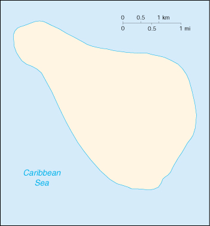

![[Country Flag of Navassa Island]](../flags/bq-lgflag.jpg)
| Navassa Island |
|
       |  | |
| Geography |
Location: Caribbean, island in the Caribbean Sea, about one-fourth of the way from Haiti to Jamaica
Geographic coordinates: 18 25 N, 75 02 W
Map references: Central America and the Caribbean
Area:
total:
5.2 sq km
land:
5.2 sq km
water:
0 sq km
Area - comparative: about nine times the size of The Mall in Washington, DC
Land boundaries: 0 km
Coastline: 8 km
Maritime claims:
exclusive economic zone:
200 nm
territorial sea:
12 nm
Climate: marine, tropical
Terrain: raised coral and limestone plateau, flat to undulating; ringed by vertical white cliffs (9 to 15 m high)
Elevation extremes:
lowest point:
Caribbean Sea 0 m
highest point:
unnamed location on southwest side 77 m
Natural resources: guano
Land use:
arable land:
0%
permanent crops:
0%
permanent pastures:
10%
forests and woodland:
0%
other:
90%
Irrigated land: 0 sq km (1998)
Natural hazards: NA
Environment - current issues: NA
Geography - note: strategic location 160 km south of the US Naval Base at Guantanamo Bay, Cuba; mostly exposed rock, but enough grassland to support goat herds; dense stands of fig-like trees, scattered cactus
| People |
Population:
uninhabited
note:
transient Haitian fishermen and others camp on the island (July 2000 est.)
| Government |
Country name:
conventional long form:
none
conventional short form:
Navassa Island
Data code: BQ
Dependency status: unincorporated territory of the US; administered from Washington, DC, by the Fish and Wildlife Service, US Department of the Interior; in September 1996, the Coast Guard ceased operations and maintenance of Navassa Island Light, a 46-meter-tall lighthouse located on the southern side of the island; there has also been a private claim advanced against the island
Flag description: the flag of the US is used
| Economy |
Economy - overview: no economic activity
| Transportation |
Ports and harbors: none; offshore anchorage only
| Military |
Military - note: defense is the responsibility of the US
| Transnational Issues |
Disputes - international: claimed by Haiti